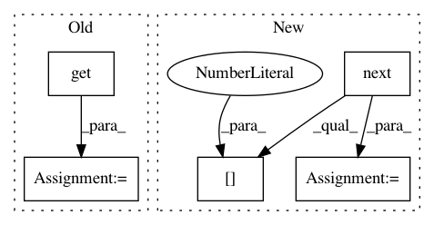

c7d901d0c1a6852f95f28ebf1bc5ea25e08e7eac,onnx_coreml/_operators.py,,_convert_upsample,#Any#Any#Any#Any#,1517
Before Change
width_scale = int(scales[3])
else:
height_scale = int(node.attrs.get("height_scale", 1))
width_scale = int(node.attrs.get("width_scale", 1))
mode_convert = {
"nearest": "NN",
"linear": "BILINEAR",
}
After Change
height_scale = int(scales[2])
width_scale = int(scales[3])
else:
key = next(iter(node.input_tensors.keys()))
scales = node.input_tensors[key]
height_scale = int(scales[2])
width_scale = int(scales[3])
mode_convert = {
"nearest": "NN",
"linear": "BILINEAR",
In pattern: SUPERPATTERN
Frequency: 3
Non-data size: 5
Instances
Project Name: onnx/onnx-coreml
Commit Name: c7d901d0c1a6852f95f28ebf1bc5ea25e08e7eac
Time: 2019-02-10
Author: dmitry.begeza@gmail.com
File Name: onnx_coreml/_operators.py
Class Name:
Method Name: _convert_upsample
Project Name: deepfakes/faceswap
Commit Name: 88352b0268efe49b54c9bdfad4846317752991ed
Time: 2019-09-15
Author: 36920800+torzdf@users.noreply.github.com
File Name: tools/lib_alignments/jobs_manual.py
Class Name: MouseHandler
Method Name: update_landmarks
Project Name: deepfakes/faceswap
Commit Name: 8f5a7a653528fd887a6106e610964a01591ed09c
Time: 2019-11-29
Author: 36920800+torzdf@users.noreply.github.com
File Name: tools/sort.py
Class Name: Sort
Method Name: _get_landmarks